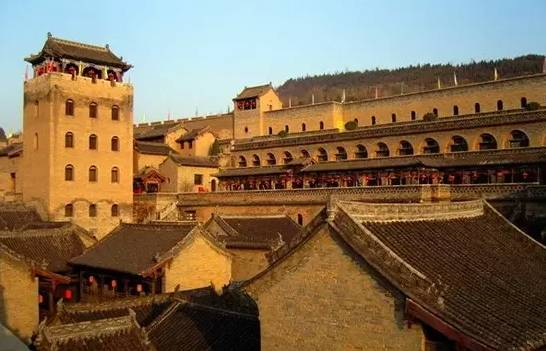
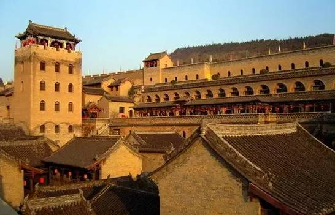

沉淀在历史尘埃中的古建筑（二）
豪宅不仅现在有，中国古代也有。宰相在乡建了个小北京—皇城相府”、沈厅里的万三传奇——周庄沈厅。
皇城相府
 

皇城相府位于山西省晋城市阳城县北留镇，原名“中道庄”，后因康熙皇帝两次下榻于此，故名“皇城”。
皇城相府总面积3.6万平方米，是清文渊阁大学士兼吏部尚书加三级、《康熙字典》总阅官、康熙皇帝35年经筵讲师陈廷敬的故居，其由内城、外城、紫芸阡等部分组成，御书楼金碧辉煌，中道庄巍峨壮观，斗筑居府院连绵，河山楼雄伟险峻，藏兵洞层叠奇妙，是一处罕见的明清两代城堡式官宦住宅建筑群，被专家誉为“中国北方第一文化巨族之宅”。
周庄沈厅
沈厅位于周庄富安桥东堍南侧的南市街上，坐东朝西，七进五门楼，大小房屋共有一百多间，占地两千多平方米，为国家级重点文物保护单位。沈厅原名敬业堂，清末改为松茂堂，由沈万三后裔沈本仁于清乾隆七年(公元1742年)建成。
在周庄的近千户民居中，沈厅无疑是最为出挑的一个。从四面八方来的人们，审视着六百年前的吴中巨富，或是为了得到某些启迪和借鉴，或是为了满足祈福的愿望，不管是什么身份，走进沈厅的每一个人，都会对沈万三这个传奇人物产生浓厚的兴趣。